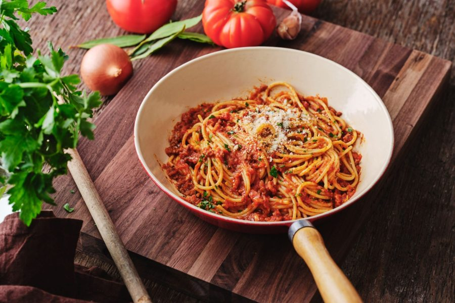

Classic Spaghetti Bolognese

Ingredients
- 1 lb (450g) ground beef
- 1 onion, chopped
- 2 cloves garlic, minced
- 1 can (14 oz) crushed tomatoes
- 2 tablespoons tomato paste
- 1 teaspoon dried oregano
- 1 teaspoon dried basil
- Salt and pepper to taste
- 8 oz (225g) spaghetti
- Grated Parmesan cheese for serving
Instructions
- In a large skillet, brown the ground beef over medium heat. Drain any excess fat.
- Add chopped onions and minced garlic to the skillet and sauté until they are soft and translucent.
- Stir in the crushed tomatoes, tomato paste, oregano, basil, salt, and pepper. Simmer for about 15-20 minutes.
- While the sauce is simmering, cook the spaghetti according to the package instructions.
- Serve the Bolognese sauce over the cooked spaghetti and top with grated Parmesan cheese.